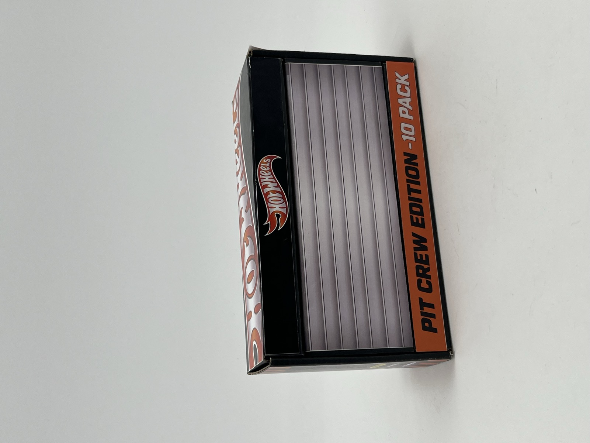
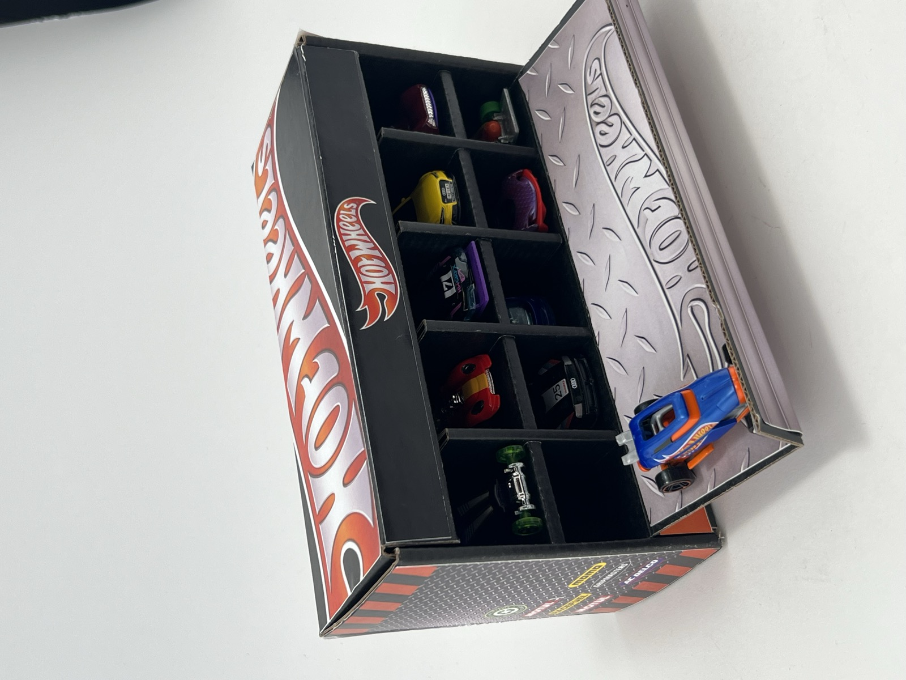
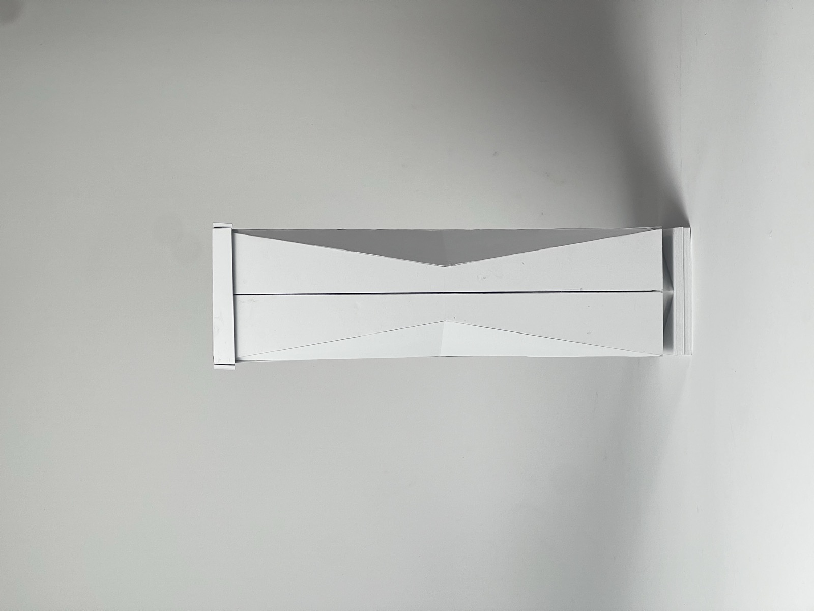
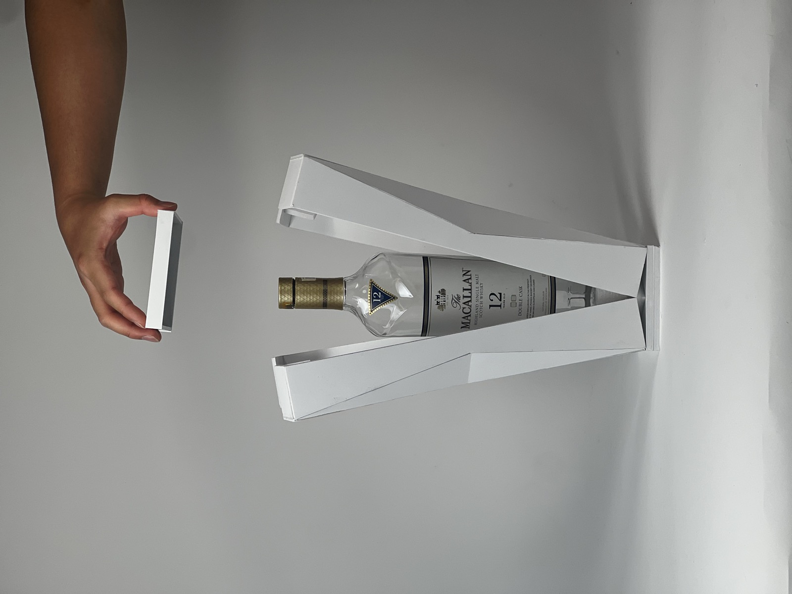
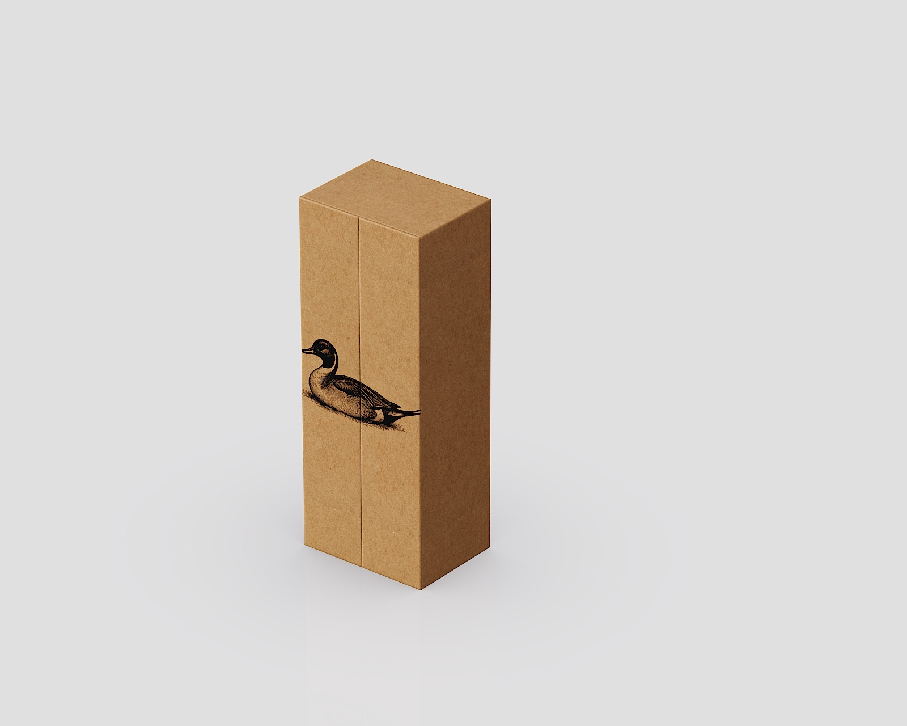
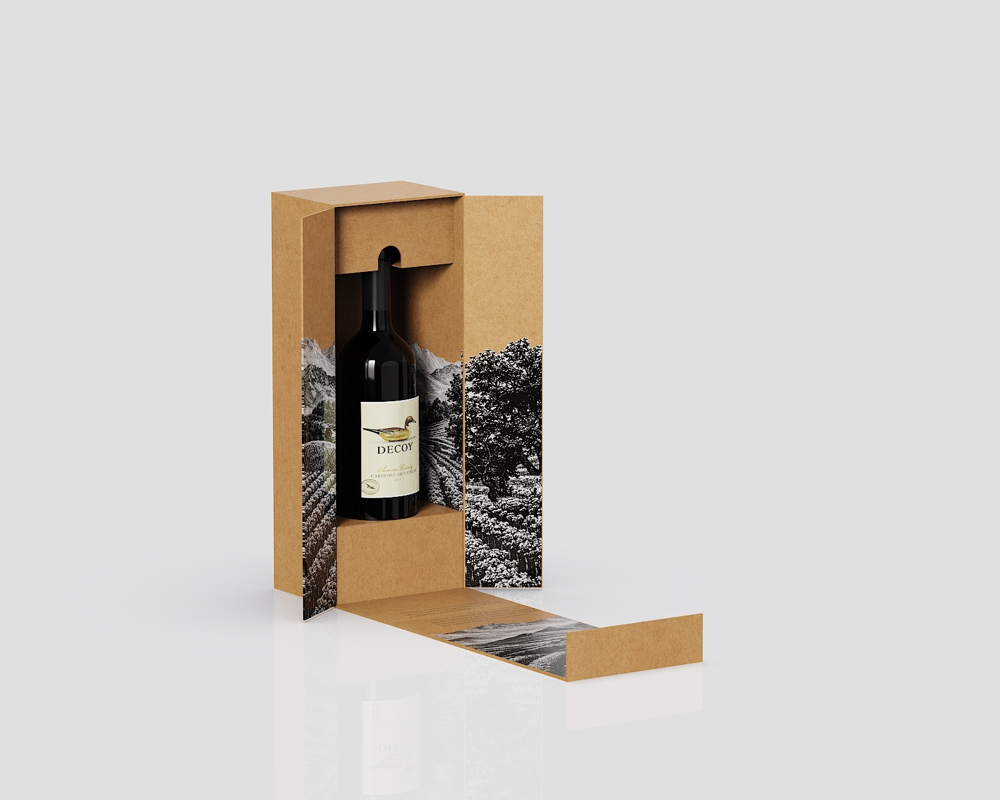
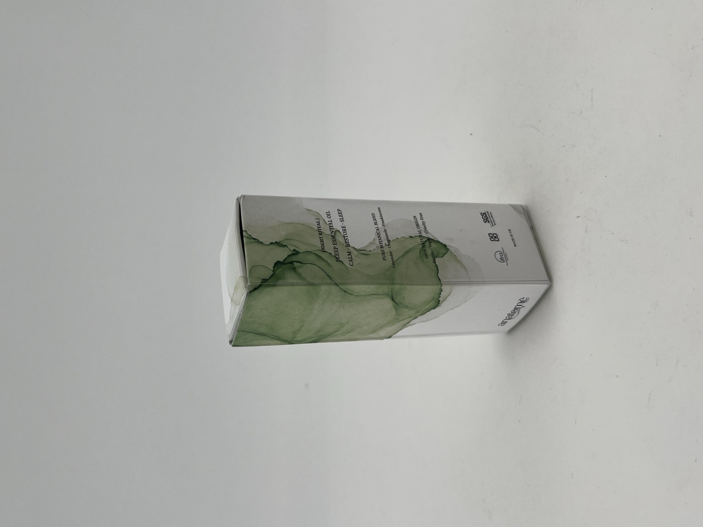
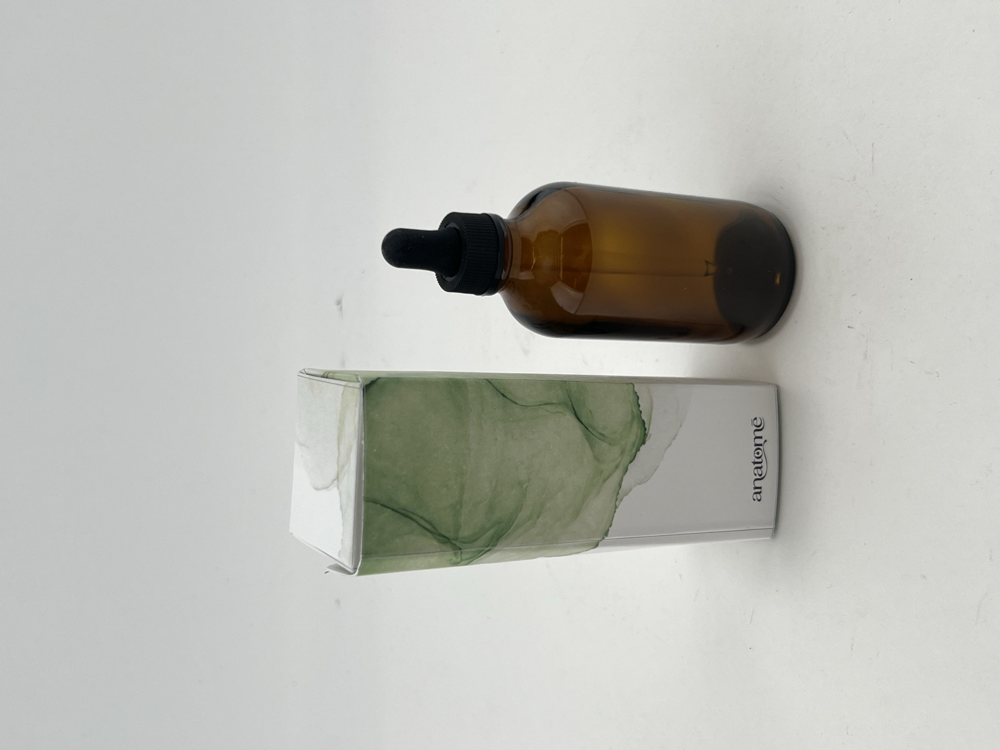

Packaging Projects
These are four projects I made during my first year at Pratt.
| Project | Type of package |
|---|---|
| Hot Wheels | Rigid box for ten cars |
| The Macallan | Premium bottle box |
| Decoy | Shipping box |
| Essential Oil | Product box |
1. Hot Wheels 10-Car Box
This box holds a set of ten Hot Wheels cars. I made it with black corrugated cardboard and took inspiration from toolboxes and garages.


2. The Macallan Premium Box
This box focuses on the unboxing experience. Four separate panels open sideways to reveal the bottle.


3. Decoy Shipping Box
I designed this as a shipping box for Decoy wine. When the customer opens it, they can see information printed inside the box.


The open Decoy box photo links to the Decoy website.
4. Essential Oil Rebrand
I redesigned the packaging for a British essential oil brand. The box uses green artwork and holds a brown glass bottle.

